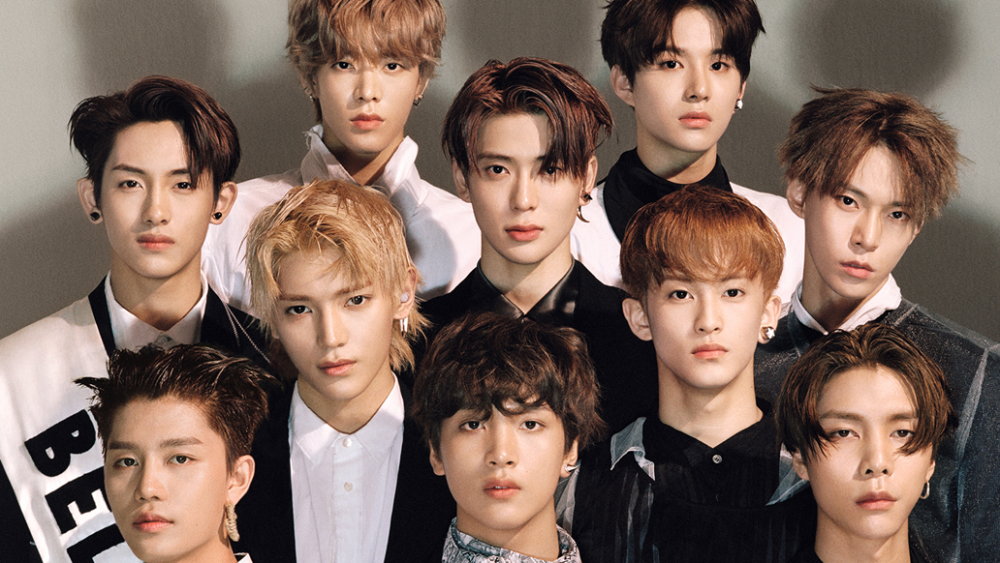

설명
nct 127 7월 7일, Mnet의 엠 카운트다운에서 데뷔 미니앨범의 타이틀 곡인 ‘소방차’와 수록곡인 ‘Once Again (여름방학)’으로 데뷔했다. 캐주얼 의류 브랜드 디자인 유나이티드의 가을/겨울 모델과 아이비클럽의 모델, 캐쥬얼 슈즈 브랜드 슈퍼콤마비 겨울 모델로 활동하게 되었다. 코카콜라의 2016 리우데자네이루 올림픽 캠페인 테마곡을 불렀으며, 7월 29일 25번째 SM STATION 앨범을 통해 음원이 발매되었다. 데뷔 한 달도 안 돼 광고계의 블루칩으로 떠올라 특급 신인다운 면모를 보여주고 있다고 한다. 9월 7일 2018 평창 동계올림픽 캠페인 송 공개 콘서트 '힘찬 함성'에 참가하여 공연하였다. 10월 27일, SM엔터테인먼트 커뮤니케이션 센터에서 유타와 윈윈의 생일파티를 개최했다. 그리고 생일파티에 참석한 팬들의 인원은 최대 127명까지 제한되었다. 12월 23일, ‘2016년 신촌 거리 축제’의 개막공연 무대에 섰다. 12월 26일, SBS 가요대전에서 컴백 티저가 공개 되었고 NCT U로 활동한 도영과 루키즈에 공개된 쟈니가 함께 등장하여 127의 합류를 알렸다. 12월 27일, 컴백 기념 V LIVE를 통해 9인조로 컴백한 멤버들이 팬들과 소통하는 시간을 가졌다. 또한 27일부터 공식 SNS들을 통해 영상과 사진 두 가지 버전으로 해찬, 마크, 태용 순으로 개인티저가 공개되고 있다. 또한 멤버들이 직접 공식 인스타그램을 통해 자신의 티저를 올리면서 팬들과 소통하는 중. 영상 티저에서 안무가 잠깐 등장한다. 12월 28일, 타이틀 곡 명이 공개되었다. ‘Limitless’가 공개될 것으로 예상했으나 모두의 예상을 깬 타이틀 곡 명은 ‘無限的我'(무한적아)’였다. 